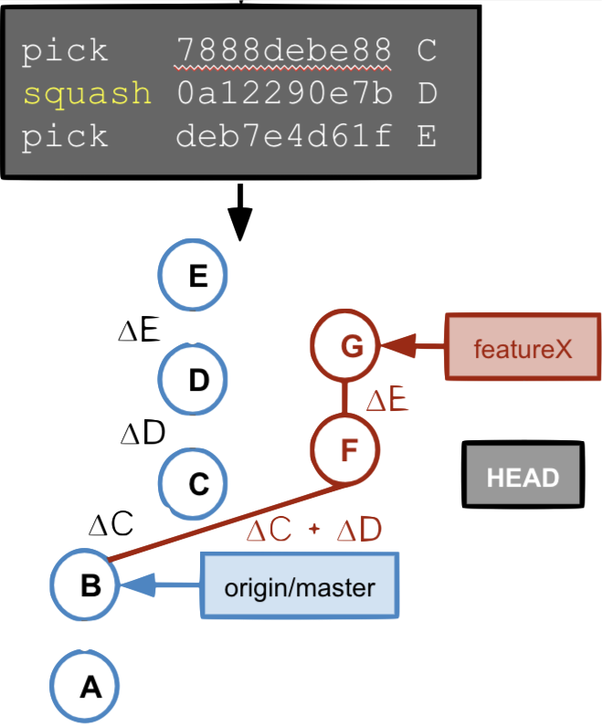

Version Control Systems
Distributed

Centralised

Image Credits : https://www.incredible-web.com/blog/revision-control-systems/
- Each developer has a complete, local repository
- Technically the central repository is not different from the local repositories
- Easy offline usage
- Easy to branch a project
- Examples: Git, Mercurial, Bazaar
Distributed means
## Git Repository Structure
A **Git Repository** is created by : * `git init` * `git clone`

* `.git` folder is git repository * `.git` folder contains the full version database. * Many files in the `.git` folder are human-readable.

* files/folders next to the `.git` folder are the working tree * A **Git Repository** has at most one working tree.

* A **Git repository** without working tree is called *bare repository* (used on servers).
## Git Commit Structure

## SHA1
* globally unique commit ID
* 40-digit hexadecimal number
* function of the commit object content
* shown in `git` log output etc.
To inspect a commit use
* `git show
## Amend Commit

## Resetting Branches
HEAD is at tip of branch

After reset

New Commit after reset
HEAD is at tip of branch

- The new commit becomes successor of the commit to which the current branch points.
- The current branch is updated.
## Tag
## Merge

Q: What is the result of merging the featureX branch into the master branch? Which branch is updated?
Merge - Fast-Forward

## Cherry-Pick

## Rebase

## Merge v/s Rebase
fetch > merge > push

fetch > rebase > push

Merge
Rebase
|
|
## Interactive Rebase
Before interactive
rebase
`git rebase -i HEAD~3`
## Revert

Reset v/s Revert v/s Checkout
reset |
Commit | Discard commits/throw uncommited changes |
reset |
File | Unstage a file |
checkout |
Commit | Switch between branches |
checkout |
File | Discard changes in the working directory |
revert |
Commit | Undo commits |
revert |
File | (N/A) |
Lab Test 1 - Quiz (git concepts)
Limitations of versioning system
- Versioning is not same as code review
- Pull requests are not good enough to enforce rules
- GitHub (a hosted site) has plugins, not necessarily free e.g. Codacy is free for Open Source (public) projects, same as GitHub
Challenges in Agile
- Communication (people and people, people across silos)
- Time to test and time to release
- Test driven development and consistent testing
Tools for Automation
- CI/CD — Jenkins, Shippable, Bamboo, Travis-CI, Github Actions
- Containerization — Docker, Rocket, Unik
- Orchestration — Kubernetes, Swarm, Mesos
- Deployment — Elastic Beanstalk, Octopus, Vamp
- Test Automation - Selenium, Cucumber, Apache JMeter
- Measurement - NewRelic, Kibana, Datadog
- ChatOps - Hubot, Lita, Cog
- Infrastructure as code - Ansible, Puppet, Chef
What is DevOps?
- The term “DevOps” typically refers to the emerging professional movement that advocates a collaborative working relationship between Development and IT Operations, resulting in the fast flow of planned work (i.e., high deploy rates), while simultaneously increasing the reliability, stability, resilience and security of the production environment (Gene Kim).
Large firms like Google would
- Manage own firmware/hardware
- Use open source and contribute back
- Write own methods and scripts
- Sometime engineer own hardware
Results in
- Control over data and enviroment
- Complexity and change
A client in need of IT services or a app shop would
- Deploy on cloud like AWS
- Pay for lot of value added services
- Pay third-party tool to install and deploy
- Trust someone else chips and software
Results in
- Quick and simple setup
- Lack of control and expensive
DevOps

DevOps Toolchain

## Jenkins
- Jenkins is a self-contained, open source automation server which can be used to automate all sorts of tasks related to building, testing, and delivering or deploying software.
- Jenkins can be installed through native system packages, Docker, or even run standalone by any machine with a Java Runtime Environment (JRE) installed.
Travis-CI

| Travis-CI | Jenkins |
|---|---|
| Simple to use with SaaS tools | good for control on your data & tools |
| Hosted(free for open source projects | Open source and can run on-premises |
| Simple config with YML file | Jobs(also has a YML file |
| Great integration with github | Github plugin |
## Docker

- Containerization is a technology that’s been around for a long time, but it’s seen new life with Docker. It packages applications as images that contain everything needed to run them: code, runtime environment, libraries, and configuration. Images run in containers, which are discrete processes that take up only as many resources as any other executable.
Learning Resources
Installation Instructions
Lab - 2
Submit a word file with screen shots of the Jenkins output
What did we learn from Lab - 2
- Basic configurations of jenkins
- Setting up Continuous delivery pipeline(CD) in Jenkins
- Groovy syntax
- What is "Pipeline as Code" (IaC)
- Build and deploy code with a CD pipeline